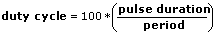

| Parameter | Description |
|---|
| Timing and Transition Measurements | Contains the following options:
- Frequency—Calculates the frequency of Signals in Hertz.
- Period—Calculates the time in seconds between adjacent middle reference level crossings in the same direction. The reciprocal of this value is the signal frequency.
- Pulse duration—Calculates the time difference in seconds between the first two middle reference level crossings. Pulse duration also is known as pulse width.
- Duty cycle—Calculates the Pulse duration as a fraction of the Period.

- Preshoot (%)—Calculates the height of the local minimum that precedes a rising transition or the local maximum that precedes a falling transition as a percentage of the histogram-based amplitude of the signal.
- Overshoot (%)—Calculates the height of the local maximum that follows a rising transition or the local minimum that follows a falling transition as a percentage of the histogram-based amplitude of the signal.
- Slew rate—Calculates the ratio between (90% amplitude – 10% amplitude) and the rise time.
|
| Results | Displays the measurement you configured this Express VI to perform and the calculated value of that measurement. You can click any measurement listed in the Measurement column, and the corresponding value or plot appears in the Result Preview graph. |
| Input Signal | Displays the input signal. If you wire data to the Express VI and run it, Input Signal displays real data. If you close and reopen the Express VI, Input Signal displays sample data until you run the Express VI again. |
| Result Preview | Displays a preview of the measurement. The Result Preview plot indicates the value of the selected measurement with a dotted line. If you wire data to the Express VI and run the VI, Result Preview displays real data. If you close and reopen the Express VI, Result Preview displays sample data until you run the VI again. If the cutoff frequency values are invalid, Result Preview does not display valid data. |
| Parameter | Description |
|---|
| Slew Rate | Returns the ratio between (90% amplitude – 10% amplitude) and the rise time. |
| Preshoot | Returns the height of the local minimum that precedes a rising transition or the local maximum that precedes a falling transition as a percentage of the histogram-based amplitude of the signal. |
| Duration | Returns the time difference in seconds between the first two middle reference level crossings. |
| Period | Returns the time in seconds between adjacent middle reference level crossings in the same direction. The reciprocal of this value is the signal frequency. |
| Frequency | Returns the frequency of Signals in Hertz. |
| Duty Cycle | Calculates the Pulse duration as a fraction of the Period. |
| Overshoot | Returns the height of the local maximum that follows a rising transition or the local minimum that follows a falling transition as a percentage of the histogram-based amplitude of the signal. |
| error out | Contains error information. This output provides standard error out functionality. |
 Add to the block diagram
Add to the block diagram Find on the palette
Find on the palette